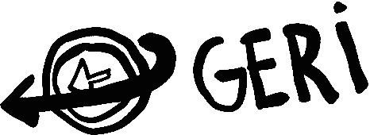

UYGULAMALAR
çizerken işime yarasın diye yaptıklarım


Kâğıda çöp adamdan istediğin pozu çiz, çek, biz üretelim.
fabrikaya gir →
YAPIM AŞAMASINDA


çizerken işime yarasın diye yaptıklarım
Kâğıda çöp adamdan istediğin pozu çiz, çek, biz üretelim.
fabrikaya gir →
